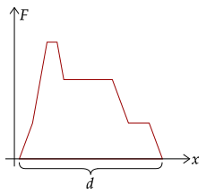
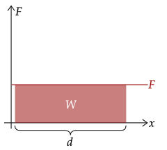
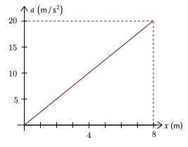
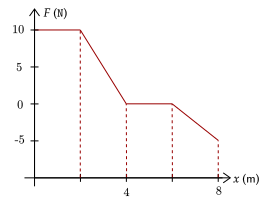

We've learned a new force that varies based on the position of the object; in other words, we can't use our equation for the work since the displacement changes. Thus, we need to find a new way to analyze work.
When something changes based on something else, it is often helpful to use a graph, just like how we dealt with variable force over time with impulse. This time, a force-position graph. To drive the point home, the graph below is the same as the one we used before, just with renamed axes.

A force-position graph shows the strength of a force over the displacement wherein the force is applied. One thing to note is that in a force-position graph, the force here is the component of the force in the direction of displacement; in other words, the cosine term in work drops out.
If, say, the force were constant, the force-position graph would look like the following.

We can see that, just like impulse, which was the area under the force-time graph, work is analogous such that it is the area under the force-position graph.
Exercise 1
(HRK E11.21) A 10-kg object moves along the x axis. Its acceleration as a function of its position is shown below. What is the net work performed on the object as it is displaced 8.0m?

Solution
This is, quite obviously, not a force-time graph. However, we can easily make it one by just using the Law of Acceleration. Thus, we get the total area under the graph, which is a triangle.
Then, we multiply it by the mass to get the force. When we do that, the area now becomes the work.
We now plug in everything we know.
Note that since force is a vector, it can be negative; this occurs because the force faces the opposite direction of the displacement.
Exercise 2
(HRK E11.22) A 5.0-kg block moves in a straight line on a horizontal frictionless surface under the influence of a force that varies with position as shown below. How much work is done by the force as the block is displaced 8.0m?

Solution
Be careful here; the graph contains both positive and negative force. Thus, we only get the area bounded above and below the 0N line.
The positive force is a trapezoid with base lengths two and four with height of 10. The negative force is a triangle with base 4 and height 5.